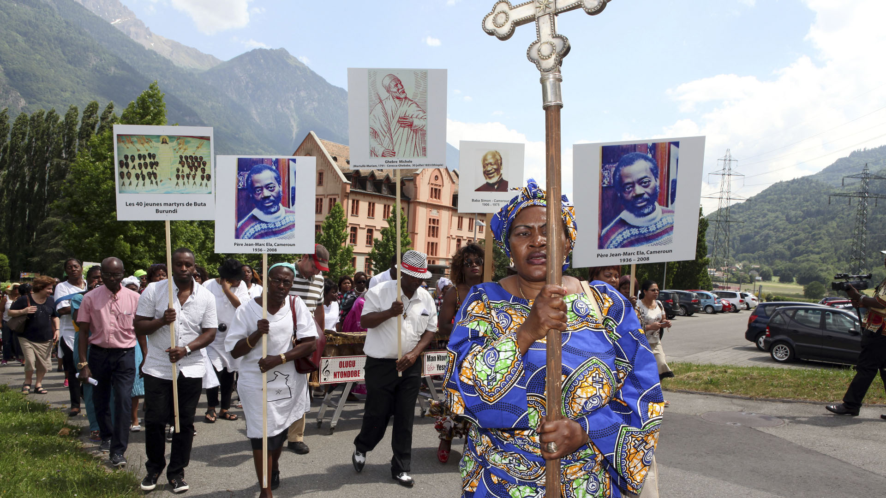
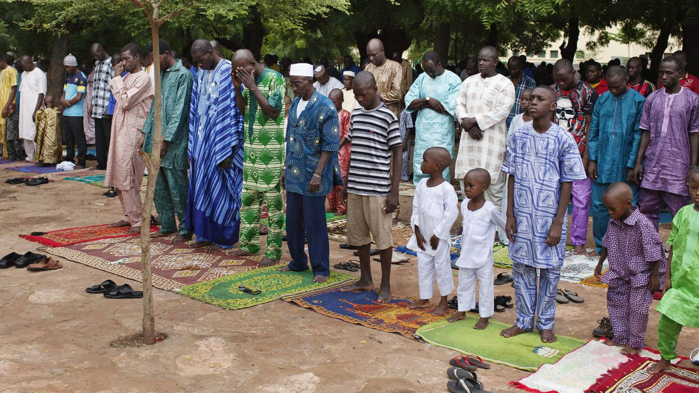

France
France Afrique
Afrique Brésil
Brésil Canada
Canada Israel
Israel Thaïlande
Thaïlande Turquie
TurquieCulture
Aujourd'hui en Afrique, beaucoup de personnes transgenre sont violées, humiliées et passées à tabac dans les lieux publiques. Ils sont rejetés par leur famille et connaise très souvent une perte d’emploi. Ces violences ont des effets psychologiques tel que la dépression, la colère, l'alcoolisme, voir le suicide.
Lois
Dans la plupart des pays d’Afrique, les transgenres ont très peu de droits. Les pays qui acceptent le changement d’identité des genres sont Ceuta, Melilla, Saint Helena,Terres australes et l’Afrique du Sud. En 2008, plus de la moitié des pays d’Afrique ont signé une déclaration contre les droits des LGBT. Tous les jours, les trangenres risque la prison en Afrique en déclarant leur changement de genre, ou la mort.
Religion
Dans le christianisme il y a une variété de points de vue sur les questions de l'identité de genre et de la transsexualité. Les nombreuses confessions chrétiennes varient dans leur position, allant de condamner transgenre agit comme un péché, pour en restant divisés sur la question, de le voir comme moralement acceptable. Même au sein d'une dénomination, les individus et les groupes peuvent avoir des vues différentes. En outre, tous les membres d'une dénomination soutiennent nécessairement le point de vue de leur église sur la transsexualité. La plupart des confessions chrétiennes ne reconnaissent pas la transition entre les sexes. Un document de la Congrégation catholique pour la Doctrine de la Foi 2000 conclut que les procédures de changement de sexe ne changent pas le sexe d'une personne dans les yeux de l'Église. "Le point clé», a déclaré le document signalé, "est que l'opération chirurgicale transsexuelle est si superficiel et externe que cela ne change pas la personnalité. Si la personne était un mâle, il reste des hommes. Si elle était une femme, elle reste une femme. "Le document conclut également qu'une" opération de changement de sexe "pourrait être moralement acceptable dans certains cas extrêmes, mais dans tous les cas les personnes transgenres ne peuvent se marier valablement.
Musulman : Dans l'Islam, le mukhannathun terme est utilisé pour décrire les personnes de sexe variante, habituellement transsexuelles mâle-femelle. Un mukhannath est le therme qui définitun homme qui dans son apparence et dans sa langue, les caractéristiques d'une femme. Il existe deux types; le premier est celui en qui ces caractéristiques sont innées, il ne les a pas mis sur pied par lui-même, et celui-ci est sans culpabilité, sans blâme et sans honte, tant qu'il ne fonctionne pas (illicite) acte ou exploiter pour de l'argent (prostitution, etc.). Le second type agit comme une femme de fins immorales et il est le pécheur et blâmable. Le statut de mukhannathun dans l'Islam a été partiellement basé sur leur incapacité à avoir des relations sexuelles avec pénétration avec les femmes, que ce soit par inclination ou en raison d'interventions anatomiques. Ils ont été autorisés à entrer dans les harems, mais éjectées si elles affichent un intérêt sexuel chez les femmes. Dans certaines périodes historiques (lorsque des sanctions contre la variance de genre étaient à la hausse) la castration était nécessaire.